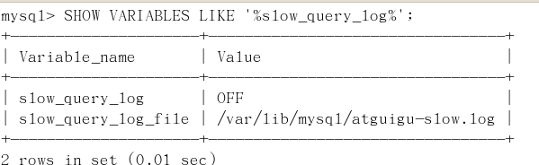

慢查询日志是什么
- MySQL的慢查询日志是MySQL提供的一种日志记录，它用来记录在MySQL中响应时间超过阀值的语句，具体指运行时间超过long_query_time值的SQL，则会被记录到慢查询日志中。
- 具体指运行时间超过long_query_time值的SQL，则会被记录到慢查询日志中。long_query_time的默认值为10，意思是运行10秒以上的语句。
- 由他来查看哪些SQL超出了我们的最大忍耐时间值，比如一条sql执行超过5秒钟，我们就算慢SQL，希望能收集超过5秒的sql，结合之前explain进行全面分析。
慢查询日志怎么玩
1、说明
- MySQL的慢查询日志是MySQL提供的一种日志记录，它用来记录在MySQL中响应时间超过阀值的语句，具体指运行时间超过long_query_time值的SQL，则会被记录到慢查询日志中。
- 具体指运行时间超过long_query_time值的SQL，则会被记录到慢查询日志中。long_query_time的默认值为10，意思是运行10秒以上的语句。
- 由他来查看哪些SQL超出了我们的最大忍耐时间值，比如一条sql执行超过5秒钟，我们就算慢SQL，希望能收集超过5秒的sql，结合之前explain进行全面分析。
2、查看是否开启及如何开启
默认
默认情况下slow_query_log的值为OFF，表示慢查询日志是禁用的，可以通过设置slow_query_log的值来开启
SHOW VARIABLES LIKE '%slow_query_log%';

开启
使用set global slow_query_log=1开启了慢查询日志只对当前数据库生效，
如果MySQL重启后则会失效。


全局变量设置，对当前连接不影响

对当前连接立刻生效

如果要永久生效，就必须修改配置文件my.cnf（其它系统变量也是如此）
修改my.cnf文件，[mysqld]下增加或修改参数
slow_query_log 和slow_query_log_file后，然后重启MySQL服务器。也即将如下两行配置进my.cnf文件
slow_query_log =1
slow_query_log_file=/var/lib/mysql/atguigu-slow.log
关于慢查询的参数slow_query_log_file ，它指定慢查询日志文件的存放路径，系统默认会给一个缺省的文件host_name-slow.log（如果没有指定参数slow_query_log_file的话）
那么开启了慢查询日志后，什么样的SQL才会记录到慢查询日志里面呢？
这个是由参数long_query_time控制，默认情况下long_query_time的值为10秒，
命令：SHOW VARIABLES LIKE 'long_query_time%';

可以使用命令修改，也可以在my.cnf参数里面修改。
假如运行时间正好等于long_query_time的情况，并不会被记录下来。也就是说，
在mysql源码里是判断大于long_query_time，而非大于等于。
3、case
1)、查看当前多少秒算慢（SHOW VARIABLES LIKE 'long_query_time%';）
2)、设置慢的阀值时间
使用命令
set global long_query_time=1
修改为阙值到1秒钟的就是慢sql

修改后发现long_query_time并没有改变。
需要重新连接或新开一个会话才能看到修改值。
SHOW VARIABLES LIKE 'long_query_time%';
或者通过set session long_query_time=1来改变当前session变量;

3)、记录慢SQL并后续分析
实验一条慢sql

跟踪日志信息

4)、查询当前系统中有多少条慢查询记录
show global status like '%Slow_queries%';

4、配置版
my.cnf
【mysqld】下配置：
slow_query_log=1;
slow_query_log_file=/var/lib/mysql/atguigu-slow.log
long_query_time=3;
log_output=FIL
日志分析工具mysqldumpslow
在生产环境中，如果要手工分析日志，查找、分析SQL，显然是个体力活，MySQL提供了日志分析工具mysqldumpslow
1、查看mysqldumpslow的帮助信息
mysqldumpslow --help

-s: 是表示按照何种方式排序；
c: 访问次数
l: 锁定时间
r: 返回记录
t: 查询时间
al:平均锁定时间
ar:平均返回记录数
at:平均查询时间
-t:即为返回前面多少条的数据；
-g:后边搭配一个正则匹配模式，大小写不敏感的；
2、工作常用参考
得到返回记录集最多的10个SQL
mysqldumpslow -s r -t 10 /var/lib/mysql/atguigu-slow.log
得到访问次数最多的10个SQL
mysqldumpslow -s c -t 10 /var/lib/mysql/atguigu-slow.log
得到按照时间排序的前10条里面含有左连接的查询语句
mysqldumpslow -s t -t 10 -g "left join" /var/lib/mysql/atguigu-slow.log
另外建议在使用这些命令时结合 | 和more 使用 ，否则有可能出现爆屏情况
mysqldumpslow -s r -t 10 /var/lib/mysql/atguigu-slow.log | more